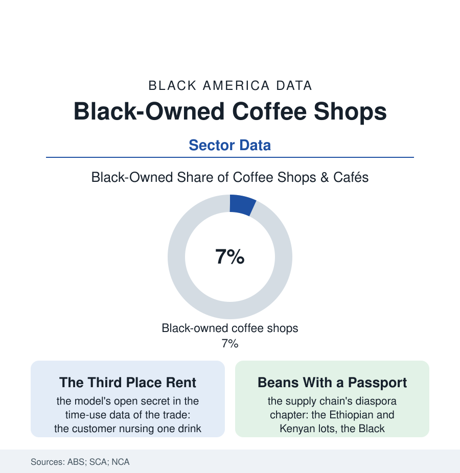

Black Business
The Living Room: Black-Owned Coffee Shops as Civic Infrastructure
The Black coffee shop sells a four-dollar drink and rents the city's best third place for free — study hall, boardroom, gallery, and salon at the price of a latte. The coffee shop file.

The sociologists call it the third place — neither home nor work, the room where the community actually happens — and in Black America its most load-bearing modern form may be the coffee shop: the laptops and the manuscripts, the Bible study and the business pitch, the gallery wall and the bookshelf, all of it financed by a four-dollar drink. This article reads the coffee shop file.
The Economics of the Lingering
The model's arithmetic is the restaurant file's most delicate: the ticket small, the seat-time enormous by design (the third place's whole product being permission to stay — the wifi, the outlets, the refills priced into the concept), the margin carried by the morning's takeout rush subsidizing the afternoon's laptop residency, the lease signed in the neighborhoods the chains price as marginal — which is to say, in the atlas's own geography, where the shop doubles as the block's safest well-lit room and its most reliable bathroom-and-outlet commons. The Black shop's specific gravity in the community data goes beyond caffeine: the shop as the gentrification argument's both-sides exhibit (the Black-owned café anchoring the corridor the residents defend; the café of any ownership standing in the displacement narrative as the change's first scout — the Black owner's shop negotiating, in the interview literature, a welcome the chain never has to earn), the cultural programming as the shop's second menu (the open mics, the book clubs of the library file's diaspora, the chess and the study groups, the HBCU alumni chapter's standing Saturday — the shop as the Greek and club files' unofficial hall), and the pandemic's remote-work conversion making the file's economics newly legible (the home office's refugees renting the third place by the latte, the suburban Black café's laptop rows in the recent openings data). The supply side completes the diaspora's circle: coffee is an African crop the trade's history routed around its originators, and the current era's Black roasters, importers, and competition baristas — the trade data's small, documented vanguard — are re-entering the chain at every link, the Ethiopian lot's story told, at last, by the people whose grandmothers picked the narrative's first draft.
The real-estate subplot has its own data trail: the Black café as the landlord's dilemma in the corridor studies — the shop that raises the block's value and then cannot afford the block it raised, its lease the gentrification file in miniature — the ownership-of-the-building rows showing the survivors disproportionately among the shops whose founders bought the walls in the cheap years, the developer file's lesson learned at café scale: own the room, or the room will eventually be rented to somebody else's living room.
The Shelf and the Struggle
The sector's structure is the service file's standard shape at boutique scale: the independent shop's enemies the chains' real-estate machine and the home-brewing premium market (the pandemic's counter-top espresso arms race), its allies the neighborhood's loyalty and the destination effect (the famous Black cafés of the big cities drawing the pilgrimage trade of the travel file — the shop as the itinerary's first stop, its beans shipped nationally on the e-commerce shelf), its labor the barista file's young creatives for whom the shop is also the studio system. The failure data are the restaurant industry's, unsparing; the survival data show the third-place model's moat in its purest form — a shop the neighborhood has adopted as infrastructure acquires defenders no balance sheet can buy (the lease fights crowd-funded, the rent strikes of affection conducted in daily four-dollar votes). The census counts a shelf of firms in the low thousands under the snack-and-drink codes. The truer census is taken at 8 a.m. on a weekday in any city of this atlas: the line at the Black café's counter — students, elders, founders, poets — the whole community in one queue, each of them renting the living room for the price of a cup, in the only currency the room accepts: showing up.
Reading the Coffee Shop Data
The coffee shop file is the business section at its warmest: the firm whose product is the neighborhood's togetherness, metered in ounces. The census counts the shops. The regulars — whose mugs, in the famous ones, hang on the wall with their names — count the institution, and would correct the census's category error over a refill.
More in Black Business
Black-Owned Businesses: Counts, Receipts, and the Representation Gap
About 161,000 Black-owned employer firms and three million solo ventures: how the Census Bureau counts Black business ownership, where firms concentrate, and the gap between population share and business share.
Black Median Net Worth: The Wealth Gap in Federal Reserve Data
The Federal Reserve puts Black median family net worth at $44,900, against $285,000 for White families — about 16 cents on the dollar. The widest gap in economic data.
Black Buying Power: The $1.8 Trillion Consumer Economy
Black buying power is estimated at about $1.8 trillion — larger than the economy of most nations. What the figure measures, who produces it, and what it buys.
Source: U.S. Census Bureau Annual Business Survey; Specialty Coffee Association data; National Coffee Association consumption reports; Small Business Administration research.